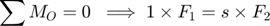

Problème 2/44, Meriam p. 46

Démarche scalaire
- Ne pas tenir compte de l'épaisseur du plancher de la plateforme.
- Remplacer la masse répartie des planchers par une force ponctuelle équivalente.
- Poser le système des axes x et x au point B.

Déterminer le bras de levier s.

clear; clc m = 8*28; % m·kg/m a = 9.821; % m/s² (Annexe D) à 37.5° de latitude mF1 = m*a; % N, Norme de F = m a mF2 = 90*a; % N s = 1*mF1/mF2; fprintf('s = %.2f m\n',s); fprintf(['\nPour assurer la sécurité du ',... 'travailleur,\nnoter que le segment du ',... 'plancher à\ndroite de B est trop long.\n']);
s = 2.49 m Pour assurer la sécurité du travailleur, noter que le segment du plancher à droite de B est trop long.